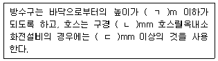
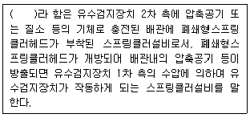
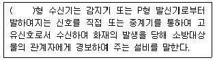

경비지도사-2차(소방학) (2011-11-13 기출문제)
1. 자연발화성물질 및 금수성물질인 제3류 위험물은?
- 황화린
- 황린
- 적린
- 유황
(정답률: 알수없음)

2. 자동화재탐지설비의 발신기는 당해 소방대상물 각 부분으로부터 하나의 발신기까지 수평거리를 몇 m 이하로 하여야 하는가?
- 25
- 30
- 35
- 40
(정답률: 알수없음)
3. 액화석유가스(LPG)의 성질에 관한 설명으로 옳지 않은 것은?
- 무색, 무취가스이다.
- 상온상압 상태에서 기체로 존재한다.
- 기체상태에서의 비중은 공기보다 가볍다.
- 완전연소 시 이산화탄소(CO2)와 수증기(H2O)가 된다.
(정답률: 알수없음)
4. 연소의 3요소에 해당되지 않는 것은?
- 점화원
- 산소공급원
- 흡열반응
- 가연물
(정답률: 알수없음)
5. 고체가연물의 연소형태로 옳지 않은 것은?
- 분해연소
- 예혼합연소
- 자기연소
- 표면연소
(정답률: 알수없음)
6. 화재 시 발생하는 연소가스 중 혈액속의 헤모글로빈과 결합하여 인체에 산소공급을 저해하는 가스는?
- 염화수소
- 이산화질소
- 이산화탄소
- 일산화탄소
(정답률: 알수없음)
7. 가연성이면서 분자내에 산소를 함유하고 있는 자기반응성 물질은?
- 제1류 위험물
- 제3류 위험물
- 제5류 위험물
- 제6류 위험물
(정답률: 알수없음)
8. 건축물 화재 시 발생된 열의 전달 방법으로 옳지 않은 것은?
- 복사(radiation)
- 단열(insulation)
- 전도(conduction)
- 대류(convection)
(정답률: 알수없음)
9. 쓰레기통 내에서 발생된 화재를 이불로 덮어 소화한 경우 주된 소화 효과는?
- 제거소화
- 질식소화
- 부촉매소화
- 냉각소화
(정답률: 알수없음)
10. A·B·C급 화재에 소화적응성이 있는 분말소화약제에 관한 설명으로 옳지 않은 것은?
- 제3종 분말을 사용한다.
- 분말의 색은 담홍색이다.
- 주성분은 제1인산암모늄이다.
- 열분해 시 발생된 이산화탄소에 의한 질식소화효과가 있다.
(정답률: 알수없음)
11. 이산화탄소(CO2) 소화약제에 관한 설명으로 옳지 않은 것은?
- 냉각소화 효과가 있다.
- 밀폐된 공간에서 질식의 위험성이 없다.
- 전기화재에 소화적응성이 있다.
- 소화약제의 방출 시 동상의 우려가 있다.
(정답률: 알수없음)
12. 물이 소화약제로 사용되는 이유로 옳지 않은 것은?
- 가격이 저렴하여 경제적이다.
- 소화용수의 취급 및 운송이 용이하다.
- 봉상주수 시 비수용성 유류화재에 대한 소화적응성이 우수하다.
- 증발잠열이 크기 때문에 냉각소화 효과가 우수하다.
(정답률: 알수없음)
13. 건축물의 각층에 옥내소화전이 각각 1개씩 설치되어 있을 경우 수원의 양은 최소 얼마 이상으로 하여 하는가? (단, 옥상수조는 제외한다.)
- 2.6m3
- 5.2m3
- 7.8m3
- 10.4m3
(정답률: 알수없음)
14. 나무, 의류, 종이, 고무 및 플라스틱과 같은 가연성물질에 의한 화재의 종류는?
- A급 화재
- B급 화재
- C급 화재
- D급 화재
(정답률: 알수없음)
15. 건축물의 피난 및 피난시설계획에 관한 설명으로 옳지 않은 것은?
- 피난계단은 직접 옥상으로 피난이 가능하도록 옥상까지 연결시킨다.
- 확실한 피난로를 확보하기 위해서 피난방향을 2방향 이상 확보한다.
- 연기에 관계되는 안전구획의 경우 1차 복도, 2차 계단전실, 3차 계단으로 구분한다.
- Fail safe란 지능이 낮은 상태의 사람이 쉽게 피난할 수 있는 정도의 피난대책을 의미한다.
(정답률: 알수없음)
16. 화재 발생 시 한 사람의 지도자에 의해 전체가 이끌려지는 피난행동 습성은?
- 추종본능
- 퇴피본능
- 지광본능
- 귀소본능
(정답률: 알수없음)
17. 1급 방화관리대상물의 방화관리자로 선임될 수 없는 자는?
- 소방기술사 자격을 가진 자
- 소방공무원으로 5년 이상 근무한 경력이 있는 자
- 소방설비기사 자격을 가진 자로서 6개월 이상 방화관리에 관한 실무경력이 있는 자
- 산업안전기사 자격을 가진 자로서 1년 이상 방화관리에 관한 실무경력이 있는 자
(정답률: 알수없음)
18. 건축물의 주요구조부로 옳지 않은 것은?
- 옥외계단
- 내력벽
- 기둥
- 보
(정답률: 알수없음)
19. 건축물내 화재하중을 감소시키기 위한 방법으로 옳지 않은 것은?
- 취급 가연물의 양을 감소시킨다.
- 불연성능의 내장재 사용을 증가시킨다.
- 단위 발열량이 높은 가연물의 사용량을 감소시킨다.
- 화재구획내 가연물의 전체발열량을 증가시킨다.
(정답률: 알수없음)
20. 가스의 종류와 저장용기 외면 도색의 연결로 옳지 않은 것은?
- 수소 - 주황색
- 아세틸렌 - 황색
- 액화석유가스(LPG) - 백색
- 액화염소 - 갈색
(정답률: 알수없음)
21. 옥내소화전설비의 방수구에 관한 내용이다. ( ) 안에 들어갈 알맞은 것은?

- ㄱ : 1.0, ㄴ : 25, ㄷ : 40
- ㄱ : 1.0, ㄴ : 32, ㄷ : 40
- ㄱ : 1.5, ㄴ : 40, ㄷ : 25
- ㄱ : 1.5, ㄴ : 50, ㄷ : 25
(정답률: 알수없음)
22. 스프링클러설비의 작동방식에 관한 내용이다. ( ) 안에 들어갈 알맞은 것은?

- 건식스프링클러설비
- 습식스프링클러설비
- 준비작동식스프링클러설비
- 일제살수식스프링클러설비
(정답률: 알수없음)
23. 상용전원을 교류전압으로 이용하는 자동화재탐지설비의 축전지 설비는 자동화재탐지설비에 대한 감시 상태를 60분간 지속한 후 유효한 경보를 최소 몇 분 이상 발할 수 있어야 하는가?
- 5분
- 10분
- 15분
- 20분
(정답률: 알수없음)
24. 휴대용비상조명등의 설치기준으로 옳지 않은 것은?
- 지하상가 및 지하역사에는 보행거리 35m 이내 마다 3개 이상 설치할 것
- 설치높이는 바닥으로부터 0.8m 이상 1.5m 이하의 높이에 설치할 것
- 건전지 및 충전식 밧데리의 용량은 20분 이상 유효하게 사용할 수 있는 것으로 할 것
- 백화점ㆍ대형점ㆍ쇼핑센타 및 영화상영관에는 보행거리 50m 이내 마다 3개 이상 설치할 것
(정답률: 알수없음)
25. 자동화재탐지설비의 수신기에 관한 내용이다. ( ) 안에 들어갈 알맞은 것은?

- A
- R
- P
- M
(정답률: 알수없음)
26. 객석 통로의 직선부분의 길이가 24m이다. 객석유도등의 설치개수는?
- 2
- 3
- 4
- 5
(정답률: 알수없음)
27. 개방형스프링클러헤드를 사용하는 스프링클러설비의 방식은?
- 습식
- 일제살수식
- 준비작동식
- 건식
(정답률: 알수없음)
28. 옥내소화전설비의 화재안전기준상 소화전 노즐선단에서의 최소 방수압력 및 방수량의 기준은?
- 0.17MPa 이상, 130ℓ/min 이상
- 0.25MPa 이상, 130ℓ/min 이상
- 0.17MPa 이상, 350ℓ/min 이상
- 0.25MPa 이상, 350ℓ/min 이상
(정답률: 알수없음)
29. 소화기구의 화재안전기준상 소방대상물의 각 층마다 설치하는 소형수동식소화기의 설치기준은? (단, 거리완화 및 지하구에 관한 단서 조항은 적용하지 않는다.)
- 보행거리 20m 이내
- 수평거리 20m 이내
- 보행거리 30m 이내
- 수평거리 30m 이내
(정답률: 알수없음)
30. 화재발생을 자동적으로 감지하여 당해 소방대상물의 화재발생을 소방대상물의 관계자에게 통보할 수 있는 설비로서 감지기, 발신기, 수신기, 경종 또는 중계기 등으로 구성된 설비는?
- 자동화재탐지설비
- 자동화재속보설비
- 비상방송설비
- 비상경보설비
(정답률: 알수없음)
31. 피난설비에 해당되지 않는 것은?
- 구조대, 휴대용비상조명등
- 공기호흡기, 인공소생기
- 간이스프링클러설비, 통합감시시설
- 유도표지, 방열복
(정답률: 알수없음)
32. 통로유도등의 종류가 아닌 것은?
- 거실통로유도등
- 객석통로유도등
- 계단통로유도등
- 복도통로유도등
(정답률: 알수없음)
33. 위험물안전관리법상 지정수량 미만인 위험물의 저장 또는 취급에 관한 기술상의 기준은 무엇으로 정하는가?
- 특별시·광역시 및 도의 조례
- 소방시설공사업법
- 화재안전기준
- 소방기본법
(정답률: 알수없음)
34. 화재안전기준상 피난기구의 정의에 관한 설명으로 옳지 않은 것은?
- 피난사다리라 함은 화재 시 긴급대피를 위해 사용하는 사다리를 말한다.
- 완강기라 함은 사용자의 몸무게에 따라 자동적으로 내려올 수 있는 기구 중 사용자가 교대하여 연속적으로 사용할 수 있는 것을 말한다.
- 간이밧줄이라 함은 급격한 하강을 방지하기 위한 매듭 등을 만들어 놓은 밧줄을 말한다.
- 구조대라 함은 포지 등을 사용하여 자루형태로 만든 것으로서 화재 시 사용자가 그 내부에 들어가서 내려옴으로써 대피할 수 있는 것을 말한다.
(정답률: 알수없음)
35. 화재, 재난ㆍ재해 그 밖의 위급한 상황의 발생으로 인하여 사람의 생명에 위험이 미칠 것으로 인정하는 때에는 일정한 구역을 지정하여 그 구역안에 있는 사람에 대하여 그 구역밖으로 피난할 것을 명할 수 있는 자로 옳지 않은 것은?
- 소방본부장
- 소방서장
- 소방대장
- 경찰서장
(정답률: 알수없음)
36. 위험물안전관리법상 제조소등의 정의에 해당되지 않는 것은?
- 제조소
- 저장소
- 취급소
- 충전소
(정답률: 알수없음)
37. 소방기본법상 소방용수시설 설치의 기준은 무엇으로 정하는가?
- 특별시ㆍ광역시 및 도의 조례
- 소방방재청 고시
- 행정안전부령
- 대통령령
(정답률: 알수없음)
38. 위험물 제조소등이 아닌 장소에서 관할소방서장의 승인을 받아 지정수량 이상의 위험물을 임시로 저장 또는 취급할 수 있는 최대 기간은?
- 30일
- 60일
- 90일
- 120일
(정답률: 알수없음)
39. 소방기본법상 관계인에 관한 정의에 해당되지 않는 자는?
- 소유자
- 점유자
- 관리자
- 감리자
(정답률: 알수없음)
40. 소방기본법상 소방대상물이 아닌 것은?
- 선박건조구조물
- 산림
- 차량
- 항해 중인 선박
(정답률: 알수없음)